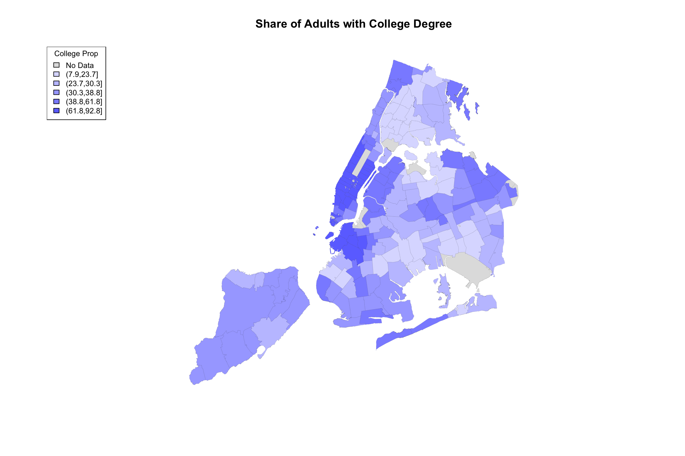

- Preface
- How Many Kinds of People Are There?
- 1 Categories, counts, and kinds
- 2 Dimensions
- 3 Tests of independence: A first look starring alternate universes
- 4 (An Infinite Number of) Shades of Gray (or Brown)
- 5 Cut Scores and Abnormality
- 6 The Modal American
- 7 Sixteen Personalities or Five Factors?
- 8 When and How Will You Die?
- 9 Conditional Death
- 10 Some facts about Probabilities
- 11 How You Will Die: Causes or Conditions?
- Will You Make Money?
- 12 Betting on Beer (or Ice Cream)
- 13 Expected Value
- Is the System Fair?
- 14 Differences in athletics
- 15 NYC COVID-19 Data
- Appendix
- A Randomness
- References
15.5 Visualizing data on maps
The whole point of using zip codes as units was that they represent distinct geographic areas. It is not easy to make sense of a list of 177 household income values, ordered by zip code. But if we convert these values to colors or shades and use those to fill in the zip code boundaries of a map, then we can “see” where the money is and where it isn’t.
Shapefiles
To carry out this feat, we will need to enlist the help of a shapefile, which is a data format that was specifically invented for geographical information systems (GIS). You don’t need to understand the detailed structure of a shapefile. You only need to know that it will allow you to map, say, the zip code 10003 to some region on a drawing.
So we will need a shapefile for NYC zip codes. Search for this on the internet, and you’ll get one here. We will need the R package that will do the translation work for us. It is called “R geospatial data abstraction library (rgdal).” Lastly, to produce images like you see in the media, we might need some color palettes. These will map numbers (e.g., proportion over 65) to colors in ways that are designed to be visually distinctive.
#load R geospatial data abstraction library
library(rgdal)
#load additional viz libraries for color paletts
library(viridis)
library(RColorBrewer)
#read in the shape file for NYC zip codes
filepath <- "Shape_Files/ZIP_CODE_040114.shp"
NYC_zips <- readOGR(filepath, stringsAsFactors = F)## OGR data source with driver: ESRI Shapefile
## Source: "/Users/bergner/GitHub/carpe-datum/Shape_Files/ZIP_CODE_040114.shp", layer: "ZIP_CODE_040114"
## with 263 features
## It has 12 fieldsThe data structure of the shapefile is pretty complicated. (Look inside, I dare you!) But right off the bat, we can plot it

Woot! There be zipcodes! Without any other data. Just… boundaries. If you are following along in an RStudio session, you can get a better quality image by uncommenting the quartz() command. This will open the drawing in a new window. Note that it takes a little while to finish, and you can see it draw the boundaries of each zipcode one at a time… aww!
To add colors or shades, we will need to send color/shade information along with the plot instruction… but there’s something else we need to do first.
How many zip codes are in our data set? The answer can be found by the number of rows in our data frame:
## [1] 177Is this the same as the number of zip codes in our shapefile? If it isn’t, then we will get issues when we combine the data we want to map with the geographic boundary data.
## [1] 263Not only are there more zipcodes in the shapefile than we have data for, but, for whatever reason involving the design of shapefiles, some zipcodes appear more than once. This is a small nuisance, but it can be solved by using join as before. The main idea is that we pass the data we have, and provide “missing” values (NA in R) for everything else.
Here is how to repackage our dataset to fit with the shapefile
# start with one zipcode variable for everything in the shapefile
mapData <- data.frame(zipcode = shapezips, stringsAsFactors = FALSE)
# add the rest of our data to this
mapData <- left_join(mapData, zcta_join, by=c("zipcode"))Simple enough. We expected there to be zipcodes with missing census/COVID-19 data. Indeed, here are some:
## zipcode Median_HH_Income Median_Income zcta_propOver65 Total_Pop Median_Age
## 258 11414 71648 45640 22.0 29219 45.0
## 259 10310 72093 44590 13.4 23262 38.8
## 260 11693 59431 44674 12.3 12919 39.5
## 261 11249 NA NA NA NA NA
## 262 10162 NA NA NA NA NA
## 263 10119 NA NA NA NA NA
## Median_Age_Male Median_Age_Fem Total_HispRace Hisp_Latin NH_Black NH_White
## 258 43.9 46.0 29219 22.3 1.8 67.8
## 259 38.2 39.1 23262 31.6 18.9 41.6
## 260 35.2 43.1 12919 29.5 16.1 46.9
## 261 NA NA NA NA NA NA
## 262 NA NA NA NA NA NA
## 263 NA NA NA NA NA NA
## NH_Asian NH_Other Bachelors Masters Professional Doctorate Total_EducPop
## 258 5.0 3.0 3828 1737 419 50 21607
## 259 6.2 1.7 2995 1768 409 150 15599
## 260 4.0 3.5 1401 828 114 10 8924
## 261 NA NA NA NA NA NA NA
## 262 NA NA NA NA NA NA NA
## 263 NA NA NA NA NA NA NA
## HH1pers HH2pers HH3pers HH4plus Bach_plus_prop AvgHH Positive Total
## 258 2603 3398 2151 2528 27.9 2.431086 588 1004
## 259 1971 2326 1628 2421 34.1 2.539061 506 1136
## 260 1469 1630 779 967 26.4 2.256760 256 444
## 261 NA NA NA NA NA NA NA NA
## 262 NA NA NA NA NA NA NA NA
## 263 NA NA NA NA NA NA NA NA
## zcta_cum.perc_pos
## 258 58.57
## 259 44.54
## 260 57.66
## 261 NA
## 262 NA
## 263 NAWhy are these zipcodes (and others) missing data? It’s hard to know, and you need to look at it case by case. Some of these are zipcodes for special areas, like industrial zones, airports. and train stations. (10119 appears to be Penn Station).
Coloring in the shapes
So, suppose we want to color in the zip code boundaries to indicate the share of college educated adults in each region. We either have the college rate in our data frame, or we have the data needed to calculate it. (In this case, we might have total college and total population, so we can compute the case rate.)
But what is the right way to map case rate, which is a numeric/quantitative variable to color? What kind of variable is color? This is a profound question that has to do with perception through our sense. Questions regarding mental perception of sounds, colors, or short-duration verbal cues, for example, are the domain of psychophysics (yes, that’s a real thing!)
Without delving too deeply into this problem, we can at least try to emulate the common practices in similar visualizations. What you’ll see is that in many cases, rather than mapping a continuous range of values (e.g., COVID-19 case rate) to a continuous range of colors/shades, the values and the colors are discretized into a small number of levels. Each zip code area, then, is mapped to one of these levels and thus one of the corresponding colors/shades. In the media reports referenced early in this chapter, five levels was pretty typical.
An important digression on choosing your levels
Let’s say we want five levels. Sometimes the level-groupings of data are associated with quintiles. Recall that quintiles divide our ordered data set into five equally-sized partitions. Meaning, we will have the same number of zip codes in the lowest quintile, and the next lowest, and so on. But one could also make five partitions where the range of values is equally sized but the number of cases in each partition is not. Think of the bin-breaks in a histogram. These are equally-sized ranges, but each bin does not necessarily have the same number of cases. Say, if the distribution is bell-shaped.
Here is an example using fake data, drawn in fact from a normal distribution:
# make some data
someNormalData <- rnorm(200, mean=0, sd = 0.5)
# slice it up into 5 groups, two ways:
quintileAssignments <- ntile(someNormalData, n=5)
partitionRanges <- c(-2.5,-1.5,-0.5, 0.5, 1.5,2.5)
equalRangeAssignments <- cut(someNormalData, partitionRanges)
# show how many cases are bucketed into each level
table(quintileAssignments)## quintileAssignments
## 1 2 3 4 5
## 40 40 40 40 40## equalRangeAssignments
## (-2.5,-1.5] (-1.5,-0.5] (-0.5,0.5] (0.5,1.5] (1.5,2.5]
## 1 28 142 29 0As you can see, the number of cases that get collected in these buckets can be different, depending on how we slice it. If we were mapping zipcodes to colors based on the values of some data such as these, then we would get very different maps. In the quantile case (quintiles, specifically!), we would have our colors spread out, or varying, more. In the equal range case, we may have only a few extreme colors, while the majority of the zipcodes are the same color. All of this happened because our data distribution was bell-shaped. Admittedly, if the distribution were flat (also known as a uniform distribution), then both methods would divide the cases similarly.
By the way, to see what the actual ranges of the quintiles are (this depends on the data you have), you can do this:
## [1] "(-1.56,-0.387]" "(-0.387,-0.0771]" "(-0.0771,0.138]" "(0.138,0.417]"
## [5] "(0.417,1.39]"This ends the digression. The reason it is important is that this choice of how to make your level assignments will ultimately change how the map looks, and thus what it communicates. We will have a chance to see this play out next.
College
We already have a variable called “Bach_plus_prop” which accounts for the proportion of college among adults 25 and over. Let’s see how this actual data set can get mapped. Because this has already gotten complicated enough, I’ve wrapped a couple of steps together into a function called getShapeColors. Feel free to simply ignore this if you already have enough on your mind and just skip to the example of how to use it.
# Safe to ignore this chunk
getShapeColors <- function(data, nbreaks=5, missingcol="gray88",
rdgrbl=c(0,0,1), mycolors=NULL){
if(length(nbreaks) == 1) {
mybreaks <- c(-1, quantile(data,
probs = seq(0, 1, length.out=nbreaks+1),
na.rm = T))
} else {
mybreaks <- c(-1,nbreaks)
}
if(!is.null(mycolors)){
mycols <- mycolors
} else {
mycols <- rgb(rdgrbl[1],rdgrbl[2],rdgrbl[3],
seq(0.05,0.65, length.out = length(mybreaks)-1))
}
mycols[1] <- missingcol
data[is.na(data)] <- -.1
mycolorscheme <- cut(data, mybreaks) %>%
as.numeric()
mycolorscheme <- mycols[mycolorscheme]
levs <- levels(cut(data, mybreaks))
levs[1] <- "No Data"
return(list(regionValues=mycolorscheme,
legendText=levs,
legendColors=mycols))
}Here’s how you use it:
bachelorPlus <- mapData$Bach_plus_prop
myShapeColors <- getShapeColors(bachelorPlus, nbreaks=5)
plot(NYC_zips, col = myShapeColors$regionValues,
main = "Share of Adults with College Degree",
cex = 10, lwd=0.05)
legend("topleft",
legend = myShapeColors$legendText,
fill = myShapeColors$legendColors, cex = 0.8,
title = "College Prop")
Hallelujah, we finally have made an image of something. Notice that the output of the getShapeColors functions contains three elements (it is technically a list): values (colors values for each geographic area), legend (text for the legend, including the ranges of values), and palette (these are the colors that go into the len).
The input of getShapeColors is the data you want to visualize as well as the number of levels. In this example, we chose 5. By default, the color palette is shades of blue, but as it is writte, you can provide different colors if you like. For example, the Furman report used a color palette called viridis, which ranges from dark blue to yellow. The only modification necessary is to add an argument to the function:
myShapeColors <- getShapeColors(bachelorPlus, nbreaks=5, mycolors=viridis(6))
plot(NYC_zips, col = myShapeColors$regionValues,
main = "Share of Adults with College Degree", cex = 10, lwd=0.05)
legend("topleft",
legend = myShapeColors$legendText,
fill = myShapeColors$legendColors, cex = 0.8, title = "College Prop")
I don’t know exactly how ABCNews made their color palette, but here is my approximation. I played around with the border color and line width as well.
ABCpalette <- c("gray88", "#4e9ccb", "#3b7ba9","#265982", "#133960","#001a3a")
myShapeColors <- getShapeColors(bachelorPlus, nbreaks=5, mycolors=ABCpalette)
plot(NYC_zips, col = myShapeColors$regionValues,
main = "Share of Adults with College Degree",
cex = 10, border="white", lwd=0.25)
legend("topleft",
legend = myShapeColors$legendText,
fill = myShapeColors$legendColors, cex = 0.8, title = "College Share")
Here is the original again.

Figure 15.1: ABCNews visualization
I hope you agree that it’s pretty close! Did you spot the main difference? Sure, there are a few of them, but notice the legend in the ABCNews figure? ABCNews used fixed ranges for their level cutoffs, whereas we were using quintiles! What if we want custom cut-points that are not quantiles?
I anticipated this desire in the getShapeColors function, so it’s easy enough. Instead of providing a number (e.g, 5) for nbreaks, you provide the actual list of cutpoints. Here it is on its own.
ABCpalette <- c("gray88", "#4e9ccb", "#3b7ba9","#265982", "#133960","#001a3a")
myShapeColors <- getShapeColors(bachelorPlus, nbreaks=c(0,20,40,60,80,100),
mycolors=ABCpalette)
plot(NYC_zips, col = myShapeColors$regionValues,
main = "Share of Adults with College Degree",
cex = 10, border="white", lwd=0.25)
legend("topleft",
legend = myShapeColors$legendText,
fill = myShapeColors$legendColors, cex = 0.8, title = "College Share")
And here are two versions of the same data, mapped side-by-side using different cut-points:
ABCpalette <- c("gray88", "#4e9ccb", "#3b7ba9","#265982", "#133960","#001a3a")
myShapeColors1 <- getShapeColors(bachelorPlus, nbreaks=5,
mycolors=ABCpalette)
myShapeColors2 <- getShapeColors(bachelorPlus, nbreaks=c(0,20,40,60,80,100),
mycolors=ABCpalette)
par(mfrow=c(1,2))
plot(NYC_zips, col = myShapeColors1$regionValues,
main = "%College using Quintiles",
cex = 10, border="white", lwd=0.25)
legend("topleft",
legend = myShapeColors1$legendText,
fill = myShapeColors1$legendColors, cex = 0.8, title = "College Share")
plot(NYC_zips, col = myShapeColors2$regionValues,
main = "%College using Equal Intervals",
cex = 10, border="white", lwd=0.25)
legend("topleft",
legend = myShapeColors2$legendText,
fill = myShapeColors2$legendColors, cex = 0.8, title = "College Share")
The difference may be subtle, and I believe an argument can be made for either. But all in all, I believe that the level separation by quintiles does a better job in highlighting the difference between the different parts of the city.
This brings us to our next topic, which is comparing COVID-19 incidence maps to maps showing census data (e.g., income, college education, race, etc.)
Looking at two variables at the same time
We can borrow the same side-by-side technique as above, but instead of the same data with different cut-points, we can plot two different variables. We’ll use quintiles in both cases.
It turns out that population-adjusted COVID-19 rate is not actually in our data set. We need to make it, but it’s easy.
covidPerCapita <- mapData$Positive/mapData$Total_Pop*100
hist(covidPerCapita, main="Zipcode-level Positive Cases Percent of Population")
myShapeColors1 <- getShapeColors(covidPerCapita, nbreaks=5)
myShapeColors2 <- getShapeColors(bachelorPlus, nbreaks=5)
par(mfrow=c(1,2))
plot(NYC_zips, col = myShapeColors1$regionValues,
main = "%COVID Cases",
cex = 10, border="white", lwd=0.25)
legend("topleft",
legend = myShapeColors1$legendText,
fill = myShapeColors1$legendColors, cex = 0.8, title = "COVID rate")
plot(NYC_zips, col = myShapeColors2$regionValues,
main = "%College",
cex = 10, border="white", lwd=0.25)
legend("topleft",
legend = myShapeColors2$legendText,
fill = myShapeColors2$legendColors, cex = 0.8, title = "College Share")
Now we’re looking at two different variables, both mapped using quintiles as an organizer of zipcode-level data. It definitely seems like one map is almost an inverse of the other. Where COVID rate is high, college rate is low, and vice versa. Is there some way for us to see both variables on the same map at the same time?
Here’s one idea. Suppose we used different colors for each variable, e.g. red and blue, but we used shades from lighter to darker to indicate lowr and higher values. And suppose we made the colors transparent, the way we did when we plotted two histograms on the same plot. When pink and light-blue are both laid over each other, we will see a purplish color. Therefore
- If both variables are high, we will have darker purple
- If both variables are low, we will have lighter purple
- If one variable is high and the other low, we will see regions of red or blue
So what happens if we “add” up the two variable maps this way?
myShapeColorsCovid <- getShapeColors(covidPerCapita, nbreaks=5, rdgrbl=c(1,0,0))
myShapeColorsCollege <- getShapeColors(bachelorPlus, nbreaks=5, rdgrbl=c(0,0,1))
par(mfrow=c(1,3))
plot(NYC_zips, col = myShapeColorsCovid$regionValues, main = "covid",
cex = 10, lwd=0.05)
plot(NYC_zips, col = myShapeColorsCollege$regionValues, main = "college",
cex = 10, lwd=0.05)
plot(NYC_zips, col = myShapeColorsCovid$regionValues, main = "covid+college",
cex = 10, lwd=0.05)
plot(NYC_zips, col = myShapeColorsCollege$regionValues, add=T,
cex = 10, lwd=0.05)
In the case of college education and COVID incidence rates, the variables are negatively associated. Overlaying two color maps, we see red and bluish regions, but we also see some purple stuff.
What would happen if we did the same for two variable with positive association? Let us map COVID-19 incidence against the average household size.
myShapeColorsCovid <- getShapeColors(covidPerCapita, nbreaks=5, rdgrbl=c(1,0,0))
myShapeColorsHH <- getShapeColors(mapData$AvgHH, nbreaks=5, rdgrbl=c(0,0,1))
par(mfrow=c(1,3))
plot(NYC_zips, col = myShapeColorsCovid$regionValues, main = "covid",
cex = 10, lwd=0.05)
plot(NYC_zips, col = myShapeColorsHH$regionValues, main = "hh size",
cex = 10, lwd=0.05)
plot(NYC_zips, col = myShapeColorsCovid$regionValues, main = "covid+hhsize",
cex = 10, lwd=0.05)
plot(NYC_zips, col = myShapeColorsHH$regionValues, add=T,
cex = 10, lwd=0.05)
Indeed, in this case, we see a map that is much more purplish overall.
Given the code examples above, you should be able to create your own zipcode maps of the variables in our data set. You can even get more variables using census queries. The problem of visualizing two (or more) variables on a map is still a challenge. The fact is, there are other data visualizations that are probably better suited to that task, even though they don’t have the narrative association with geography. I’m thinking about the lowly scatterplot
Scatterplots
Here are the data from the last two examples visualized using both maps and scatterplots.
par(mfrow=c(2,2), mar = c(3, 2, 1, 1))
plot(NYC_zips, col = myShapeColorsCovid$regionValues, main = "covid+hhsize",
cex = 10, lwd=0.05)
plot(NYC_zips, col = myShapeColorsHH$regionValues, add=T,
cex = 10, lwd=0.05)
plot(mapData$AvgHH, covidPerCapita, col=myShapeColorsCovid$regionValues,
pch=16,
xlab = "", ylab="")
points(mapData$AvgHH, covidPerCapita, col=myShapeColorsHH$regionValues,
pch=16)
mtext("Avg Household Size", side = 1, line = 2)
mtext("COVID rate", side = 2, line = 2)
plot(NYC_zips, col = myShapeColorsCovid$regionValues, main = "covid+college",
cex = 10, lwd=0.05)
plot(NYC_zips, col = myShapeColorsCollege$regionValues, add=T,
cex = 10, lwd=0.05)
plot(mapData$Bach_plus_prop, covidPerCapita, col=myShapeColorsCovid$regionValues,
pch=16,
xlab="", ylab="")
points(mapData$Bach_plus_prop, covidPerCapita, col=myShapeColorsCollege$regionValues,
pch=16)
mtext("College Percentage", side = 1, line = 2)
mtext("COVID rate", side = 2, line = 2)
The scatterplots on the right side make it easier to see the relationship between the two variables. As average household sizes go up per zipcode, so do COVID rates. As college education goes up, COVID rates go down. Each point in the scatterplot corresponds to a zipcode region, and in fact, the coloring of the points is the same as the coloring of the regions. But the scatterplot has no geographical information.
Along the 1-to-1 line (i.e., a perfect positive and linear relationship), we would have all purple points, with the colors getting darker at high values. The farther away we are from this diagonal, the more red (above the line) or blue (below) the points are. Note that even with a strongly negative relationship (diagonal trend going down to the right), we will still pass through a purple region. These are regions with average values for both variables.